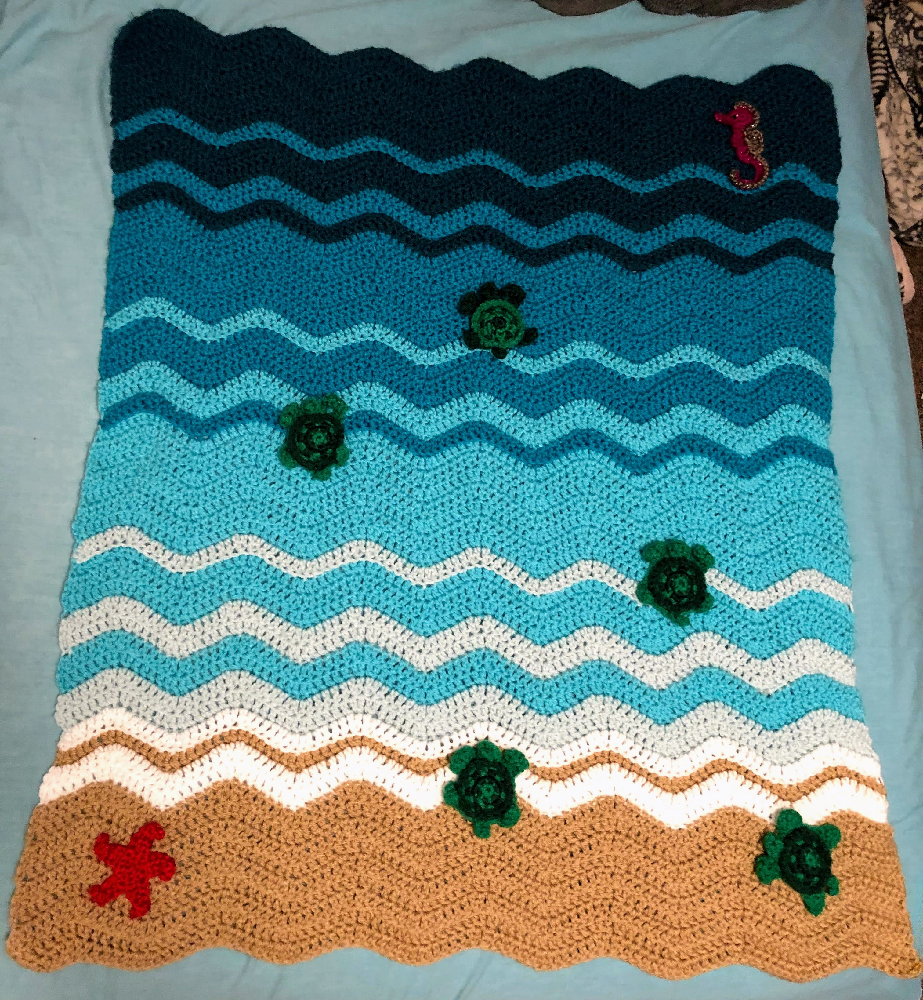

Pattern of the Week - 10/29/25
Baby Sea Turtle Blanket
SUPPLIES:
- "I Love this Yarn", one skein of each color:
- Color 1 - Antique Teal
- Color 2 - Peacock
- Color 3 - Turquoise
- Color 4 - Glacier
- Color 5 - White
- Color 6 - Light Taupe
- Size J Hook
- Size H Hook
BABY BLANKET PATTERN:
Row 1 - With Color 1, ch 101, dc in 4th ch from hook, dc in next 4 ch, dc2tog, dc2tog, dc in next 4 ch, 2 dc in next, *2 dc in next, dc in next 4 ch, dc2tog, dc2tog, dc in next 4 ch, 2 dc in next* repeat from * to * to end.
Row 2 - Ch 3 turn, dc in same st, dc in next 4 st, dc2tog, dc2tog, dc in next 4 st, 2 dc in next * 2 dc in next, dc in next 4 st, dc2tog, dc2tog, dc in next 4 st, 2 dc in next* repeat from * to * to end.
Row 3-59 - Repeat Row 2
To create ridges, when changing colors, work in blo for that row.
COLOR PATTERN
- 8 Rows of Antique Teal
- 1 Row of Peacock
- 3 Rows of Antique Teal
- 2 Rows of Peacock
- 1 Row of Teal
- 7 Rows of Peacock
- 1 Row of Turquoise
- 3 Rows of Peacock
- 2 Rows of Turquoise
- 1 Row of Peacock
- 7 Rows of Turquoise
- 1 Row of Glacier
- 3 Rows of Turquoise
- 2 Rows of Glacier
- 2 Rows of Turquoise
- 2 Rows of Glacier
- 1 Row of White
- 1 Row of Tan
- 2 Rows of White
- 9 Rows of Tan
BABY SEA TURTLE PATTERN
Baby Sea Turtle Pattern by Kristin JacobsMake 5. I used lime green as color 1 and hunter green as color 2. I did not make the back, but instead attached them to the blanket.
STARFISH PATTERN
Size H Hook - Gold Yarn
Round 1 - Magic circle, ch 1. 5 sc in magic circle, join with a sl st, pull tight. (5 sc)
Round 2 - ch 1, 2 sc in each st, join with a sl st
Round 3 - *Ch 7, sl st in 2nd ch from hook, sc in next 3 ch, hdc in next 2 ch, skip next sc, sl st in next sc* repeat from * to *, finish off, leaving a long tail to attach to blanket.
ASSEMBLY
Weave in all ends. Use a whip stitch to sew the baby sea turtles and starfish.